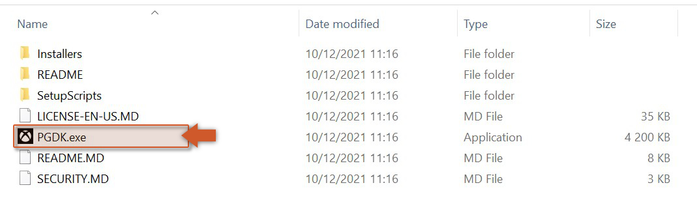

Building Guide
This guide will provide you the necessary steps for building the extension from source, if you wish to do so.
- Install Visual Studio 2022 (see download site).
- Install GDK (Apr 2025) from Microsoft's GitHub repository (here).
 - Install CMAKE (see download site).
- Clone the GDK Extension repository (see here).
- Open the Solution in
source/GDKExtension_gml/extensions/GDKExtension/gdkextension_windows/GDKExtension.slnwith Visual Studio 2022. - Select either one of these building targets:
Debug|Gaming.Desktop.x64orRelease|Gaming.Desktop.x64(other options won't work).

- Build the project; the compiled DLL will then be exported to the folder
source/GDKExtension_gml/extensions/GDKExtension/. - You've now finished the building process and can continue setting up your project.